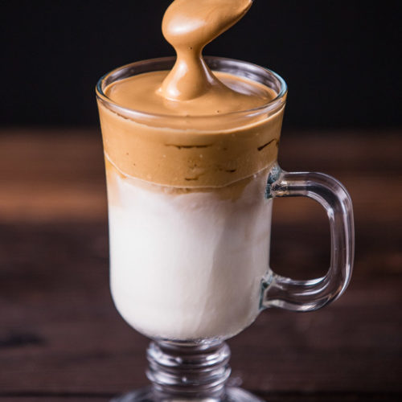

Dalgona Coffee
Ingredients
- 2 tbsp instant coffee
- 2 tbsp sugar
- 2 tbsp very hot water
- 400ml milk
Preparation
- Add the instant coffee, sugar and hot water to a medium mixing bowl. Using an electric hand-held mixer, whip the coffee mixture until it is light brown, fluffy and holds stiff peaks when the whisk is removed.
- Heat the milk, if desired, and divide between two heatproof glasses. Spoon dollops of the frothed coffee mixture on top and smooth out with a spoon. Serve.